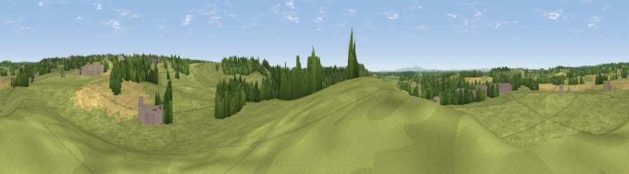

Viewpoint near Feckenham
#29827 in England · top 58% of its area beats it · near FeckenhamWhere it is
The exact computed spot (SP 02725 61325). Click the marker for map links.
The view, rendered

A 360° render of this exact spot computed from the terrain model, tree cover and land cover — summer colours, afternoon light, calibrated against photographs of famous viewpoints. Real trees, hedges and buildings will differ in detail.
The panorama
Grey silhouette: terrain skyline in each direction (720 bearings, Earth curvature and refraction included). Dashed green: skyline with trees (+15 m) and buildings (+8 m) as obstacles. Blue strip: how far the ground is visible on each bearing.
Where the view opens
Wedge length = distance to the farthest visible ground on that bearing (vegetation-aware). Rings at 10, 25 and 50 km.
What fills the view
80% grassland · 11% cropland · 7% woodland · 2% built-up
Angular shares of the visible panorama (visual magnitude), not map area. Landscape diversity 0.30 (0–1 Shannon).
Key numbers
More beautiful places nearby
The staircase of upgrades: each row has a higher view potential than everything closer. Driving times are estimates from straight-line distance, calibrated against real road routing — check an actual route before setting out.
| Place | Direction | Drive | Score |
|---|---|---|---|
| Viewpoint near Inkberrow | SSW · 2 km | ~6 min | 49.5 |
| Viewpoint near Feckenham | WNW · 3 km | ~6 min | 49.7 |
| Viewpoint near Inkberrow | SSW · 3 km | ~7 min | 58.4 |
| Viewpoint near Inkberrow | SSW · 5 km | ~10 min | 62.8 |
| Viewpoint near Arrow | SSE · 7 km | ~14 min | 63.1 |
| Rous Lench Hill | S · 8 km | ~16 min | 64.0 |
| Viewpoint near Lenchwick | S · 14 km | ~25 min | 65.2 |
| Holywell Hill | NNW · 16 km | ~29 min | 69.4 |
52.25010, -1.96150 · source: screening · position refined by local search. Computed location — check access rights before visiting.